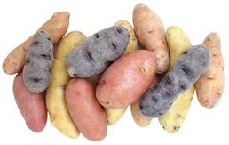

SAFARI
Users
- General & History
- Culinary Types
- Buying & Storing
- Cooking Methods
- Potato Products
- Health and Nutrition
- Links.
General & History
Potatoes originated in southern Peru and were already an important cultivated crop in Peru and Chile 10,000 years ago. They are well adapted to growing at high altitudes and under harsh conditions. Photo © i0013.
Brought to Spain from Peru in 1565, potatoes were first grown as a curiosity in botanical gardens. They were so obviously relatives of the toxic black nightshade most people didn't taken them seriously as a food crop. Spanish and French sailors, however, found eating potatoes warded off scurvy, a much more serious threat than a little poisoning.
The English claim Sir Walter Raleigh introduced potatoes to Ireland through his Irish estate around 1589. It is said they came from Virginia, but this story is probably not true. They were probably introduced to Ireland from a ship of the Spanish Armada wrecked on the Irish coast.
A story holds, Sir Walter Raleigh later sent some to Queen Elizabeth. A royal banquet featuring potatoes was ordered, but the cooks were not instructed. They tossed the root tubers and cooked the greens. There was great sickness in court that day and potatoes were banned by order of the Queen. I have not been able to verify this story, but even if it isn't true, it ought to be.
Germans were the first to take potatoes seriously as food, in hopes of supplementing failure prone wheat crops. They tried very hard to make bread out of them and that didn't work ("potato bread" is almost all wheat). Having failed, but with substantial plantings, the Germans tried feeding potatoes to their pigs. The pigs ate them with gusto, and the Germans figured that many pigs just could not be wrong - so they learned to boil, fry and bake potatoes as vegetables.
A Frenchman named Parmentier learned about potatoes in Prussian POW camp during the 7 years war. He introduced them to France by agreement with king Louis XVI. The French found their dogs wouldn't eat them so would have nothing to do with them. Parmentier planted 100 acres of the king's land with potatoes, and the king's soldiers kept them under 24 hour armed guard. One day the soldiers were given the night off and potatoes were soon growing all over France.
In Ireland potatoes became particularly important after the English conquest of the early to mid 1600s. The English took all the good land, all the money, cut the forests to build ships, and shipped most food crops directly to England. The Irish, left landless and unemployed, had nothing to do except eat potatoes and procreate. This resulted in a huge population increase. Then came the potato blight of 1845 to 1849. The population was reduced by about half (from around 9 million to a bit over 4 million) through starvation, disease and emigration.
Though brought over by Irish immigrants, potatoes were still viewed with suspicion in North America until about 1900 when a potato variety developed by Luther Burbank became widely grown in Idaho. It was soon accepted in most of North America.
Potato developers continue to experiment with new varieties and cross breeding with ancient varieties from Peru and Chile (our commercial potatoes are mostly of Chilean ancestry). We now have potatoes of many kinds, sizes and colors with different flavors and cooking properties to chose from.
Culinary Types
Washington State University (P1) lists 575 varieties of potato grown in North America. Thousands more are grown in Peru alone and more than 5000 worldwide. Those listed here are typical of the types sold in North America. The exact variety can be critically important to food processors and fast food chains, but home cooks can just go with the general type and be fine.
A note on names - not only do many older varieties go under different names in different regions, newer varieties often have names trademarked by the developers. Other developers may produce almost identical potatoes but must call them by a different (often similar) name.
Of course, the cultivars I have listed here are all North American since that's what's available in my local markets. For British varieties see the excellent Potato Council Web site. Australians have some of each and then some.
Baking Potatoes:
[Russets, Idaho, Russet Burbank, Norgold Russet; Starchy Potatoes; Fluffy Potatoes (England)]
These potatoes have thick, rough (russeted) medium brown skins, low sugar and a high starch content with amylose starch predominating. They have a dry, mealy flesh and are preferred for baking and mashing. The photo specimens were 5.4 inches long and 2.7 inches wide, weighing 10-5/8 ounces.
These should never be wrapped in foil for baking. They should not be used in soups and stews unless they are primarily a thickener because they will disintegrate. They are very good for frying - some cooks feel they are the only potato worth frying. Baking potatoes have good storage properties and can easily keep for weeks in a cool dark place with good air circulation.
The common Russet Burbank was developed by Luther Burbank as a blight
resistant potato for Ireland, since the Irish would apparently rather
starve than eat any other kind - and russets are the only kind used there
to this day.
Boiling Potatoes:
These potatoes with smooth thin skins come in a variety of colors but all have a firm, almost waxy flesh. They are relatively low in starch with amylopectin predominating and have a relatively high sugar content. Actual performance for boiling is specific to varieties but they generally stay firm.
They are not good for baking and don't work well for mashing either,
producing a heavy, lumpy mash. They are best where you want potatoes,
slices or cubes to remain intact through wet cooking, particularly in
soups and stews. Round white potatoes predominate in the Northeast US
while only red varieties are found in the Northwest and California.
Round White[Eastern Potato, Maine Potato, Katahdin, Superior, Norwis, Ontario]. Round whites are the potatoes called "Maine" or "Eastern", but all these terms are highly deceptive. Atlantic, for instance, is a "round white" potato widely grown in Maine, but it is suitable only for potato chips and isn't any better for boiling than a Russet. Fortunately it only occasionally enters the fresh potato market because most are shipped directly to chippers, but when they do it can mean disaster for a dinner recipe. Plenty of russets are grown in Maine. Superior is the most grown for the fresh market, followed by Norwis
and Ontario, but they'll seldom be marked by variety. Round whites are
almost never seen on the West Coast where reds are the dominant boiling
potatoes.
Photo © i0012.
Red La Soda[similar: Red Pontiac, Chieftain] Red boiling potatoes are grown in California (mostly Red La Soda, but also Chieftain) and the US Southeast. They're round potatoes with deep red skin and white flesh. Peak season is winter and storage properties are good. Excellent boiling potatoes with very good flavor. Excellent for Potato Salads. These hold together well for cubing after boiling in the skins, and the thin skin is easily peeled off. The photo specimens were, for the largest, 3.75 inches
length and across x 2.7 inches thick. The smallest was 1.6 inches long
and across, 1.4 inches thick and weighed 1-1/4 ounces.
Red Bliss[Bliss Triumph] This potato is markedly red with a thin, slightly flaky skin and crisp white flesh. They are grown in California primarily as a "New Potato" and are also grown farther north and into Canada. They are much in demand by chefs and gourmets and are called for by upscale food writers (because they are really hard to find). Red Bliss potato chips are featured at Trader Joe's and other vendors to the yuppie class. I haven't seen any fresh ones in Los Angeles, they're probably all shipped to cities like New York and San Francisco where higher prices are more welcome. |
All Purpose Potatoes:
These smooth skinned potatoes are general purpose with a balance of
amylose and amylopectin starches - not ideal for baking or boiling but
they'll work well enough to get by. Good for stews where you want the
potatoes to break down just a little to thicken the stew, but stay mostly
intact.
White Rose[California Long White, American Giant, Wisconsin Pride, Late Pride, Long White] Some classify them as a baking potato but I consider them on the baking edge of the range of all-purpose potatoes. White Rose can pass reasonably well for most cooking methods. Some say to wrap them in foil for baking, but I've found it is better to bake them unwrapped like the thick skinned russets. These are my favorites potatoes for soups and stews. They hold together well enough but are soft enough to provide some thickening, especially if you crush a few pieces. The skin is very thin and the flesh is white. California supplies 80% of the US crop, and it is the most grown
potato in the state, but some are grown in Washington and Oregon.
Their peak season is late spring and early summer. Storage life is
relatively short and they green easily. The photo specimens were 4.8
inches long, 2.7 inches wide, 2 inches thick and weighed 8-1/2 ounces
- about average size for large ones.
Dutch Yellow & Honey Gold®These two varieties look much the same, roughly 2-1/2 inches long by 1-3/4 inches diameter. They have thin light colored skins and distinctly yellow flesh. They are available in North American markets, usually put up in 24 ounce mesh bags. The Honey Gold is distributed only by Tasteful Selections. These potatoes are good for soups and stews, staying reasonably firm
with long cooking, though not as firm as White Rose. They can also be
roasted, even skin-on, or fried.
KennebecRound, with a thin light tan skin, very shallow eyes and white flesh with good flavor. A substantial crop is grown in California, ranking third after White Rose and Russet Burbank, but I don't see them in markets in Los Angeles. Pretty much the entire crop goes to processors. Kennebec are considered good for potato chips, French fries and hash
browns as well as for boiling and scalloping. First established around
1948, it's a fairly large mid-season potato with good keeping
properties.
Photo by Victor M. Vicente Selvas contributed to the
Public Domain.
Maris Piper[Solanum tuberosum var Maris Piper] This is currently the most cultivated potato in the UK, accounting for
16% of planted area in 2014. It has smooth skin with scattered shallow
eyes and dryish flesh that cooks up fluffy. It is considered excellent for
roasting, chips (French fries), and mashing, but I have seen little mention
of it being used in soups or stews. It is not available in North America
due to UK export controls. Subst: for most of it's recommended uses,
Russets will work fine, with slight difference in flavor.
Photo by Smartse distributed under license Creative Commons
Attribution-ShareAlike v4.0 International.
Yukon Gold[similar: Klondike Goldust] These were developed in Canada as a cold climate variety, but have become very popular with the chef set. Though nearly all recent recipes call for them, I avoid them. I particularly object to their turning to mush if cooked a little longer than the minimum (I do a lot of stews and soups). I also don't care for their flavor or color. Why does every recipe call for them today, even for uses for which they are unsuitable? I believe, like the Canola Oil industry, the Yukon Gold growers have bought off the culinary publishers, and you can't get your book or recipe published unless you call for Yukon Gold Potatoes. I have seen cookbook recipes that use the subtrifuge of calling for a suitable potato and adding "or Yukon Gold" even though unsuitable. Apparently publishers are as easy to buy as politicians and scientists. The main reason the chef set likes them so much is, if cooked just right, they are fairly firm and not at all crumbly. This makes it possible to cut them into very neat cubes and slices. Cook them a little too long and they become mushy. The Yukon should not be used for baking where it is inferior even to the White Rose, and certainly to the Russet. Because of the Yukon's current popularity, other yellow potatoes are sometimes palmed off as "Yukon Gold". Real Yukons have shallow eyes which tend to be pinkish. Klondike Goldust is a widely available similar potato for which the developer has licensed the Green Giant brand name. These Potatoes have yellowish skins and light yellow flesh. The
large photo specimen (larger than most you will see), was 4.7 inches
long and weighed 1 pound 1-1/2 ounces. The small ones are more typical
of what you find in supermarkets, the smallest being 2.3 inches long
and weighing 2-3/8 ounces.
Klondike Rose[similar: Red Yukon] A unique potato of unusually elongated shape with red skin and yellow flesh. I have yet to see any of these in Southern California. It is reported to have good buttery flavor, and skins that turns brown when baked. |
Purple and Blue Potatoes
Purples are seen most consistently in markets serving Indian communities but also appear in supermarkets and at Whole Foods Markets (often cheaper than in the supers). Most blue and purple skinned potatoes are blue or purple all the way through. The photo specimens were 4.4 inches long and 2.2 inches wide, weighing 6-1/2 ounces From the white ring under the skin I suspect these are variety "All Blue".
These potatoes must be cooked carefully because they get mushy if
overcooked. Microwaving is said to be the best way to preserve color,
but I find it survives boiling quite well. They are a good accent as
mashed potatoes or in potato salads but have a little less flavor
than red, white or yellow varieties.
Fingerling Potatoes
 Small very elongated heirloom potatoes between 2 and 4 inches long. These are fully mature potatoes, not early harvest of immature. They can generally be found in the supermarkets in bags of mixed colors, but Whole Foods sometimes has bags of a single type, usually Russian Banana (a yellow potato).
They are a bit expensive because the cost of growing and harvesting is
much higher than for larger potatoes. They are used mainly in salads and
other recipes where they will be particularly obvious and are called for
by some Indian and other ethnic recipes.
Photo © i0012
.
Creamer Potatoes
Any type potatoes harvested when they are about 1 inch in diameter but definitely less than 2 inches. They may be white or red. As with fingerling potatoes, they sell at a premium price so are used in high profile dishes where they are particularly obvious. I have not seen the name "creamer" used in Southern Califonrnia.
New Potatoes
[Early Potatoes]
Properly, these are very young potatoes of any type with a high moisture content and very thin paper-like skin that's easily flaked off. Potatoes of this description are available seasonally in potato growing areas.
Due to extra care in harvesting new potatoes are expensive, but are much in demand. They are usually used whole in very simple recipes where their flavor will not be concealed, usually cooked by roasting or steaming. They are quite perishable and should be used within a few days
The term "new potato" has been somewhat degraded, mainly because so many recipes call for them even though they're not readily available. Many people don't know that "new potato" means anything except "small", but small mature potatoes are not properly called "new".
Some refer to red potatoes generically as "new potatoes" but this is
in error. Reds are the potatoes most often harvested as "new" in
California, but they are not generically "new", they must be very young
just like any other new potato.
Photo © i0009.
Petite Potatoes
These are the essentially the same as "Creamer Potatoes", but not sold under that old name, as it wouldn't be much recognized here in California, were these were grown. The photo specimens were from 1-1/2 to 2 inches long and weighed about 15 to the pound. They were purchased from a large multi-ethnic market in Los Angeles (Altadena) for 2018 US $1.00 / pound in 1-1/2 pound mesh bags. These should be boiled skin-on and served whole using very simple recipes, so their colors and flavor can be fully appreciated.
Chuño
[Chuño (Peru, Bolivia); Papas Secas (Spanish); Tunto (white Chuño): Solanum tuberosum]
These are freeze dried potatoes that have been produced by the Inca and
Tiwanaku cultures for thousands of years. Potatoes are frozen by night and
thawed by day, then trampled under foot and peeled. They are then let freeze
by night another few days and sun dried by day. White chuño is washed
between freezings and black chuño is not. These can be stored for
decades, and are important to traditional cuisines in Bolivia and Peru.
Details and Cooking
Four Corner's Potato
[Wild Potato; Solanum jamesii]
Not a potato proper, but a closely related species. Archaeological
evidence shows these tubers have been used as a food source by native
tribes in the American Southwest for at least 10,000 years, and probably
under cultivation for most of that time. They are still so used today,
by tribes in the Four Corners region and surrounding. They are very
small, only up to about 1-1/4 inches, and very bitter, so they need
special treatment to be edible.
Details and Cooking
Health & Nutrition
The potato's reputation for being fattening is not so much from the potatoes themselves (not much more so than apples), but the oils, butters and sour cream they are often cooked in or eaten with. Potatoes contain no fat or cholesterol.
Potatoes are about 75% water and 19% complex carbohydrates, and are sufficiently nutritious a person could maintain good health on a diet of just potatoes and milk (for vitamins A and D). A fair amount of the vitamin and mineral content is near the surface, but more than half is distributed throughout the interior.
Vitamins and Minerals:
Potatoes are high in vitamin C, to the extent Spanish and French sailors consumed potatoes to ward off scurvy just as British sailors consumed lime juice and the Germans sauerkraut. They are also fairly rich in vitamin B6 and contain significant amounts of Thiamine, Niacin, Iron, Magnesium, Phosphorus and Potassium. Potatoes contain more potassium than any other common vegetable, or even bananas. Potassium mitigates the effects of sodium in salt.Protein:
Potatoes are about 2% protein and that protein is a very balanced mix of amino acids. The protein is almost all right under the skin so to take advantage of this nutrient potatoes should be cooked skin-on and eaten whole or with just the papery skin removed after cooking.Dietary Fiber:
Fiber is provided mainly by the skin, but the flesh contains an indigestible starch which provides the same benefits. This form of starch in a cooked potato is about 7% but if the potato is allowed to cool it will increase to about 13%.Toxicity:
Despite assurances by the Michio Kushi Macrobiotics folks that potatoes will send you to an early grave, demographics do not support this claim. The foliage and fruit of the potato plant do contain significant levels of the powerful neurotoxin solanine, and this toxin is not destroyed by normal cooking. The root tubers of domestic potatoes contain very little solanine and new varieties are tested for this. In any case, most of the solanine is within 1.5 mm (1/16 inch) so peeling even quite thinly will remove most of it.The amount of toxin in a potato may increase if it is exposed to light and turns green, but this is not a reliable indicator. Bitterness is a better indicator as Solanine is an alkaloid. Greening can occur without significant increase in toxicity and toxicity can be present without greening. Diseased potatoes or those showing decay may have elevated levels of solanine and should be discarded. Individual tolerance is said to vary, but I've eaten plenty of lightly greenish potatoes without ill effect, and no cases of potato poisoning have been reported in the United States for about 50 years.
There are rumors red potatoes are unaffected by greening and increased toxins, but this is unlikely, it's just a lot harder to detect in red and purple potatoes. Measurement of solanine is not at all easy, so it's unlikely reliable data is available.
Strangely, some sources (FDA) say solanine toxins are water soluble, but most analysis sources say it is not. The fact that boiling potatoes does not significantly reduce the solanine content suggests it is not water soluable. Some say it is soluble in water to which citric acid has been added - but I find no reliable confirmation for this. Scientific sources say it is soluable in hot alcohol, but not water.
Acrylamide:
This substance was detected in fried potato products in Sweden in 2002. It is not unique to potatoes but occurs in all high carbohydrate foods when heated, like toast, for instance. It has been in our food since the invention of cooking.Acrylamide has been shown to cause cancer in some laboratory animals when they are fed massive doses of it over a period of time. Whether there is any danger to humans in the dosages we're likely to consume is totally unknown, to the extent health authorities are unable to provide meaningful warnings or set limits. Food industry workers exposed to twice the normal amount of Acrylamide showed no increase in cancer rates.
If you are concerned about acrylamide and want to minimize your exposure without seriously compromising the range of flavors in your food, you should brown your carbohydrate containing foods to a light golden color rather than darker. Toast should be toasted to the minimum color acceptable and the same for rice, corn and potato products. Smoking exposes you to about 3 times the Acrylamide level you are likely to get from dietary sources.
Links
- P1 575 Varieties - Washington State University
- P4 Potato Information - Potato Association of America.
- P5 British Potato Varieties - Potato Council.
- P6 Varieties - Ed Hume Seeds.
- P7 Varieties - Cooks Thesaurus
- P8 Varieties & Tools - recipetips.com.
- P9 Acrylamide - American Cancer Society.